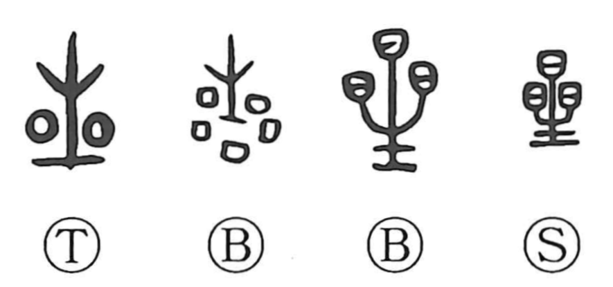

Explanation
Star is a phono-semantic character. The lower part, 生, serves as the phonetic, giving the on-yomi sei. In early forms the upper element was written as 晶, a cluster of 日 marks that here do not depict the sun but stars, conveying the glittering brilliance of many lights in the night sky. From this vivid image, the character came to mean “star.” Classical verse already names specific stars: the Book of Odes mentions the Weaver Star (Vega, 織女星) and the Big Dipper. Astronomical lore about planetary movements, especially Jupiter, was enriched by knowledge from the western regions; terms such as 赤奮若 (for the year when Jupiter stood in the direction of 丑) and 摂提格 (for 寅), and the designation 歳星 “year star” for Jupiter itself, are phonetic transcriptions ultimately deriving from southwestern Asia and Egypt.